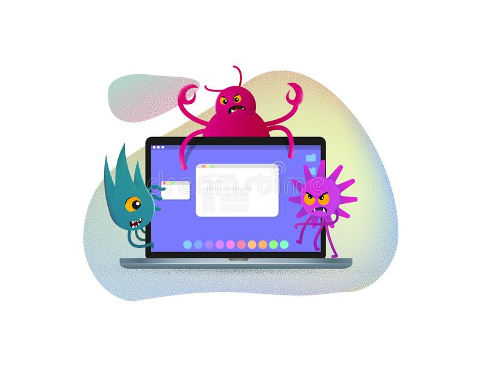

Delito informático son aquellas acciones antijurídicas que son realizadas en el entorno digital, es cualquier uso ilegal, delictivo, inmoral o no autorizado de dispositivos electrónicos e Internet, con el objetivo de invadir, destruir o dañar la propiedad de partidos u organizaciones. También conocido como ciberdelito, cubre un amplio abanico de acciones ilícitas de diferentes naturaleza. Son conductas en que el o los delincuentes se valen de programas informáticos para cometer delitos tales como, implantación de virus, suplantación de sitios web, estafas, violación de derechos de autor, piratería, etc. 